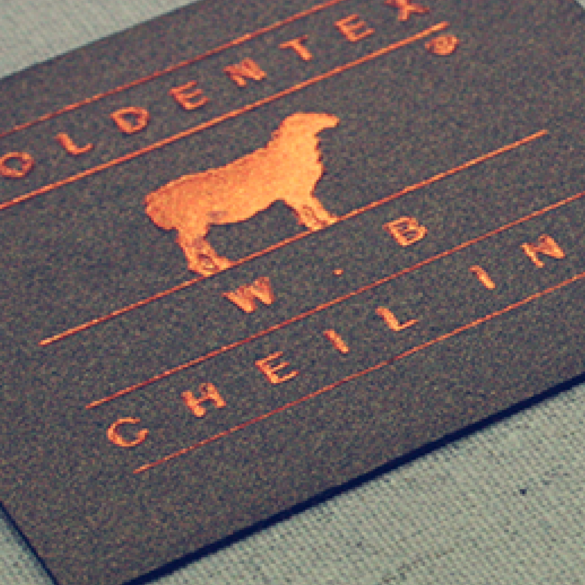

현재 트렌드는 맞춤양복!
기성복 시장이 맞춤양복 보다 시장이 상당히 크지만, 현재 우리 젊은 사람들의 트렌드가 옷을 딱 맞게 입는 편이기 때문에 기성복의 획일화된 디자인, 사이즈보다 맞춤양복을 더 선호하고 있습니다. 그렇기 때문에 앞으로 맞춤양복의 시장이 더 활성화 될 것이라 생각합니다.


내 체형에 꼭 맞는 옷
표준 사이즈가 있지만 그렇지 않은 분들도 많이 있어요. 운동선수들이 상체는 좋은데 허리가 상당히 얇은 분들도 많죠. 이런분들이 기성복이 잘 안맞아요. 표준 체형이 아닌 분들도 이쪽에 오시게 되면 자기 몸에 딱 맞는 옷을 입을 수가 있습니다 !